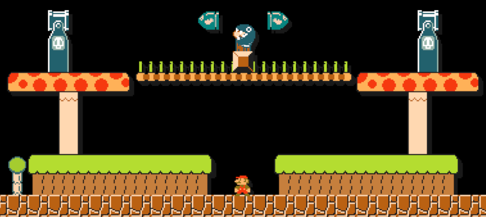

{kind=link}
So what are the changes? Did you change the music? Or did you just do a Tileset swap?
Since: 10-24-17
|
As you may know, there was NEVER a ghost house theme in Super Mario Brothers. And there wasn't a night theme in SMM's SMB1. So I thought it'd be interesting to replace the Ghost House in SMB1 with Night. I've always wanted night in SMM, but Nintendo never did it, and fans hated that. So I decided to take the time to replace something that wasn't in SMB1 to something that WAS in SMB1.  It includes the Sprites and Sounds of the Ground Theme. If you ever do post a course with this mod but you're scared of Nintendo banning you from the SMM server, save your course, turn off your Wii U, turn it back on to reset everything about mods (Haxchi, CFW Booter, SDCafiine, etc.) save and upload the course so there's no signs of a mod. Download for Wii U: https://www.sendspace.com/file/y4o0mz |
|
Posted on 10-24-17, 06:11 pm
(rev. 1 by
 Hüseyin the Mighty on 10-24-17, 06:13 pm) Hüseyin the Mighty on 10-24-17, 06:13 pm) |
Since: 10-24-17
|
"If you ever do post a course with this mod but you're scared of Nintendo banning you" Can you explain what you mean by that? Graphic edits are not in uploaded course data. Packs appear locally only, from any method I'm aware of. |
|
Posted on 10-24-17, 11:27 pm
|
Since: 10-24-17
|
"If you ever do post a course with this mod but you're scared of Nintendo banning you" Can you explain what you mean by that? Graphic edits are not in uploaded course data. Packs appear locally only, from any method I'm aware of. It's because mods can look so different compared to the original source (like GRAnimated's SMW Minecraft Mod) Nintendo could end up being suspicious about it and take courses down. And when you save a course with the theme and upload it, the custom theme stays with it on the thumbnail when uploading. I'm just wanting to be safe, considering the fact that Nintendo likes to take down courses that don't follow their guide. That also goes along with your courses. I know about you, Psycrow. I've seen your hacked courses (like Journey to the Sphinx)... and they are freaking INTENSE. So if Nintendo can't let you upload courses like that, then I'm sure Nintendo's sensitive butts won't let us upload courses with custom themes. |
|
Posted on 10-24-17, 11:35 pm
|
Since: 10-24-17
|
Thanks & thanks for clarifying what you meant :) |
|
Posted on 10-25-17, 12:11 am
|
Since: 10-24-17
|
Thanks & thanks for clarifying what you meant :) Y'Welcome |
|
Posted on 10-25-17, 12:35 am
|

Since: 05-17-17
From: Mushroom Kingdom |
Old 3DS XL info:
I used to have a 3DSafe A9LH V11.3.0-36U with Luma in my CTRNAND. Since ReiNAND Reibooted and Re-Reileased, I "switch"ed back. Right now, I have boot9strap with Luma 8.0 as my CFW. Though, I'd like to see other CFW's for B9S. |
|
Posted on 11-17-17, 03:53 pm
|

WillyMaker

Smell like... create a mod!
Since: 04-03-18
From: My home |
Link not works... _________________________ YT: https://www.youtube.com/channel/UCBDaY5sapkDhqlBBNJnW-Og
Wii U ID: guillebros 3DS ID: 3411 1273 2115 Smell like... Create a level! |
|
Posted on 09-17-18, 06:58 pm
|